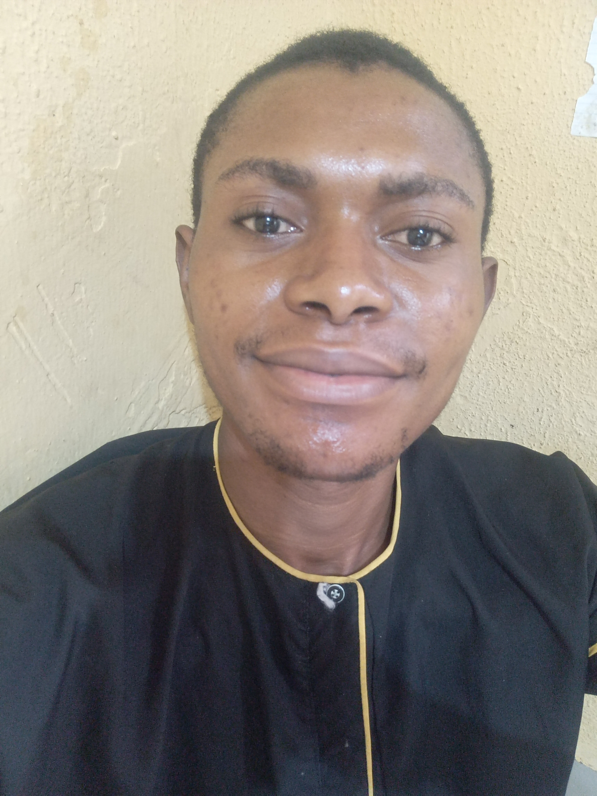

Marcus Isaiah Chinedum

Sumamary
A Surveying and Geoinformatics graduate with proficiency in Auto cad,ArcGis,Microsoft tools and Google Earth.Interested in taking up roles that will lead to carrer advancement and enhance my problem solving skills.
Educational Background
- Yaba College of Technology(HND)- Surveying and Geoinformatics(2020-2022)
- Yaba College of Technology(OND)- Surveying and Geoinformatics(2017-2019)
- Goodluck Comprehensive College-Secondary School Certificate Examination(2015-2012)
Work Experience
- Joe Faraday Engineering Limited |Lekki,Lagos state |Assistant Surveyor(Onsite)
April 2022-November 2022
- Assisted the surveyor,who is the team leader in conducting surveys which involves using specialized equipment such as total station and GPS receiver to measure distances,angles and elevations.
- Exhibiting ownership/accountability of all assigned tasks from start to finish,meeting stipulated deadlines
- Chicken Republic|Akoka,Lagos state |Marketer
Feburary 2022-April 2020
- Developed and implemented marketing strategies that promote the brand,increase customers awareness and drive sales
- Helped create marketing campaigns and promotions
Skills
- Effective Communication
- Time Management
- Adaptability
- Data Annotation and Categorization
- Critical thinking
- Research and analtical skills
Awards and Certificate
- Certifed project Manager(CPMP)
- -The American Academy of Project Management(AAPM)|October 2023
- Certificate of Merit from Environmental Community Development Service
- President of the CDS | 2023
My hobbies
Contact me